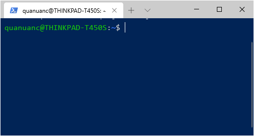
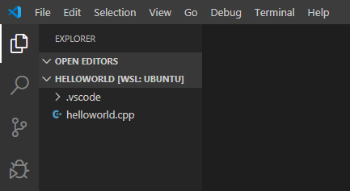
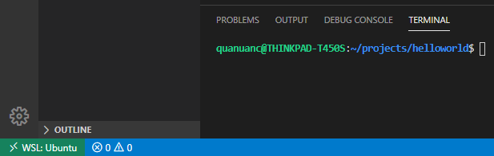
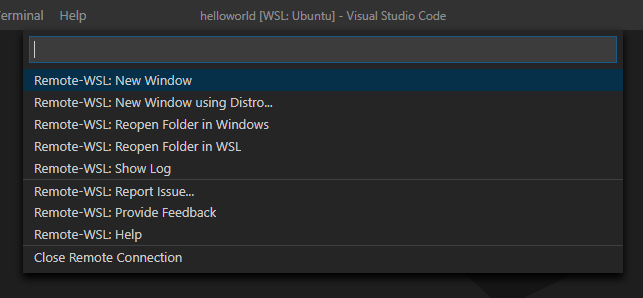
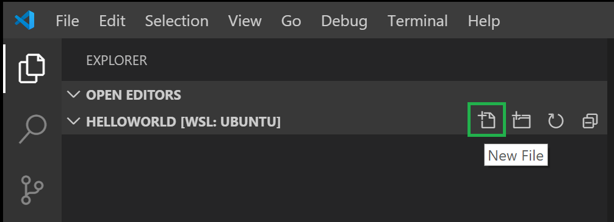
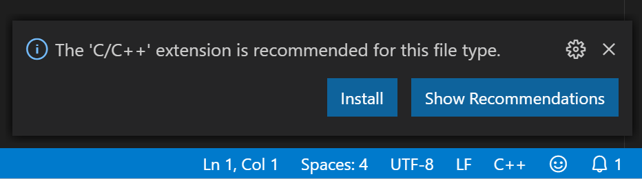
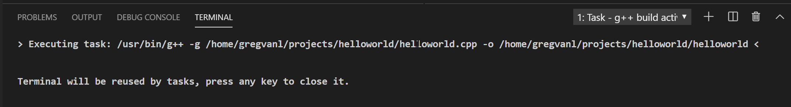
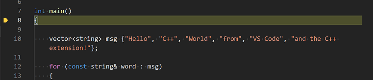

[译] 使用 VS Code 和 WSL 搭建 C++ 开发环境
译者序
本文翻译自 Visual Studio Code 官方说明文档 Using C++ and WSL in VS Code
本文根据原文内容意译，而非逐词逐句翻译，如需了解更多，推荐阅读原文
在本教程中，你将配置 Visual Studio Code，在 Windows Linux 子系统（WSL）Ubuntu 中使用 GCC C++编译器（g++）和 GDB 调试器。GCC 代表了 GNU 编译器集合，GDB 是 GNU 调试器。WSL 是 Windows 中的 Linux 环境，它直接运行在计算机硬件上，而非虚拟机中。
Note: 本教程的大部分内容适用于直接在 Linux 机器上使用 C++ 和 VS Code。
先决条件
- 安装 Visual Studio Code（译者注：推荐下载 Zip 版本，开启 便携模式）
- 安装 Remote - WSL 扩展
- 安装 WSL，可以按照个人习惯选择 Linux 发行版。本文使用 Ubuntu
设置 Linux 环境
- 打开 WSL，进入系统中。

-
建立 projects 文件夹，然后再建立 helloworld 子文件夹
mkdir projects cd projects mkdir helloworld -
安装编译和调试工具。在 Ubuntu 中安装只需要执行以下命令即可
sudo apt-get update sudo apt-get install build-essential gdb -
确认以上工具是否已经安装成功
whereis g++ whereis gdb
使用 VS Code 连接到 WSL
在 VS Code 连接到 WSL，打开 helloworld 文件夹。

你也可以在左下角状态栏看到连接状态。

如果你点击状态栏的 WSL: Ubuntu，你会看到一个下拉选单。点击 Close Remote Connection 就可以断开与 WSL 的连接。

添加源码文件
在文件管理器标题栏中，点击 New File 按钮，并把文件命名为：helloworld.cpp。

安装 C/C++ 扩展
如果你还没安装 Microsoft C/C++ extension 扩展，VS Code 会提示你安装。

输入源代码
输入你的 C++ 代码并保存。
#include <iostream>
#include <vector>
#include <string>
using namespace std;
int main()
{
vector<string> msg {"Hello", "C++", "World", "from", "VS Code", "and the C++ extension!"};
for (const string& word : msg)
{
cout << word << " ";
}
cout << endl;
}
编译源码
创建一个 task.json 文件，告诉 VS Code 如何编译这个程序。
在标题栏中选择 Terminal > Configure Default Build Task. 在下拉栏中，选择 g++ build active file. 
选择这个命令会在 .vscode 文件夹中创建 task.json 文件，它的内容如下：
{
"version": "2.0.0",
"tasks": [
{
"type": "shell",
"label": "g++ build active file",
"command": "/usr/bin/g++",
"args": ["-g", "${file}", "-o", "${fileDirname}/${fileBasenameNoExtension}"],
"options": {
"cwd": "/usr/bin"
},
"problemMatcher": ["$gcc"],
"group": {
"kind": "build",
"isDefault": true
}
}
]
}
运行编译任务
-
回到 helloworld.cpp，现在可以开始编译源代码了
-
按下快捷键 Ctrl + Shift + B
-
编译任务开始后，可以在终端界面中看到输出信息

- 在终端中输入 ./helloworld 即可运行程序
调试 helloworld.cpp
下一步，你会创建一个 launch.json，用以配置 VS Code 如何调用 GDB 调试器来调试程序。选择 Debug > Add Configuration... 然后选择 C++ (GDB/LLDB)。
在下拉栏中选择 g++ build and debug active file。
VS Code 会创建一个 launch.json 文件，内容如下：
{
"version": "0.2.0",
"configurations": [
{
"name": "g++ build and debug active file",
"type": "cppdbg",
"request": "launch",
"program": "${fileDirname}/${fileBasenameNoExtension}",
"args": [],
"stopAtEntry": false,
"cwd": "${workspaceFolder}",
"environment": [],
"externalConsole": false,
"MIMode": "gdb",
"setupCommands": [
{
"description": "Enable pretty-printing for gdb",
"text": "-enable-pretty-printing",
"ignoreFailures": true
}
],
"preLaunchTask": "g++ build active file",
"miDebuggerPath": "/usr/bin/gdb"
}
]
}
开始调试
- 回到 helloworld.cpp 文件
- 按下 F5 或者选择 Debug > Start Debugging。在开始逐步执行代码之前，让我们花点时间注意界面中的几个更改：
- 集成的终端会出现在编辑区的下方。在 Debug Output 标签页中，你可以看到代码的输出，这表明调试器已经启动并运行。
- 编辑器中高亮显示了
main方法的第一行语句。这是 C++ 扩展自动为你设定的断点。

- 左侧的 Run 视图显示调试信息。
- 在代码编辑器的顶部，将显示一个调试控制面板。您可以通过按住左侧的点在屏幕上移动它。

关闭
当您在 WSL 中完成工作后，可以使用 File 菜单中的 Close Remote Connection 命令和快捷键（Ctrl+Shift+P）关闭远程会话。这将重新启动本地运行的 VS Code。您可以在 File > Open Recent 中选择带有 [WSL] 后缀的文件夹来重新打开 WSL 会话。